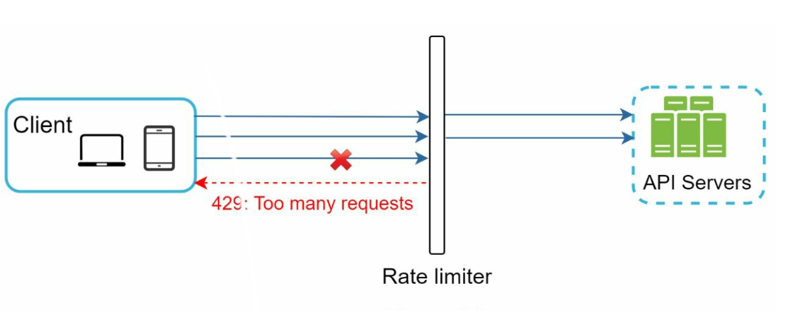
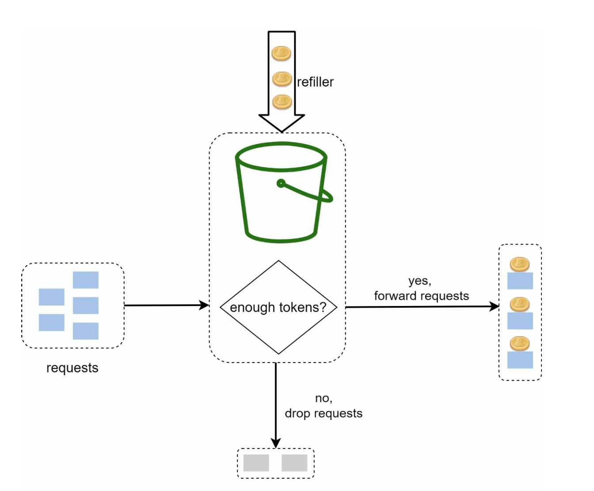
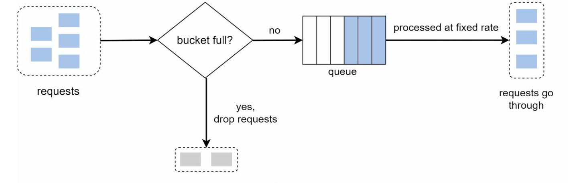
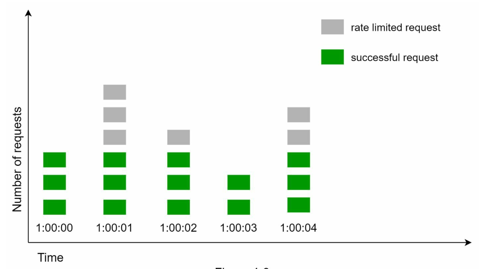
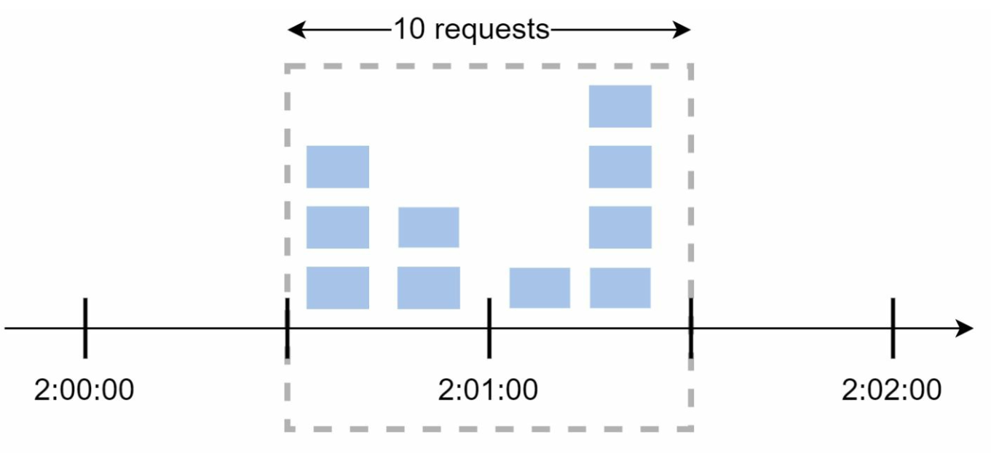
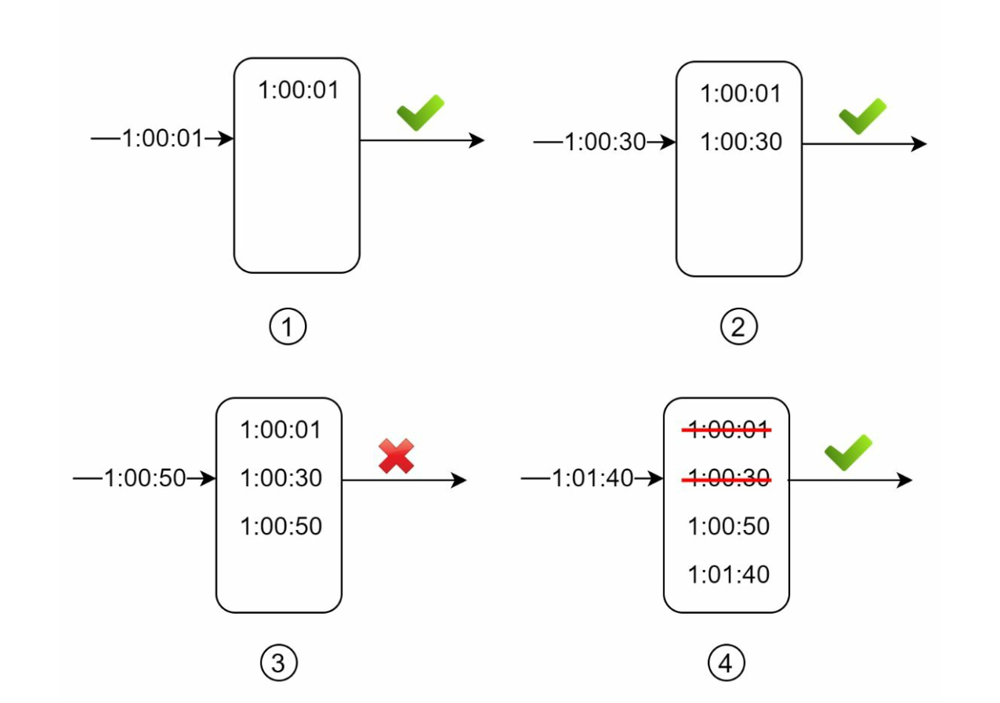
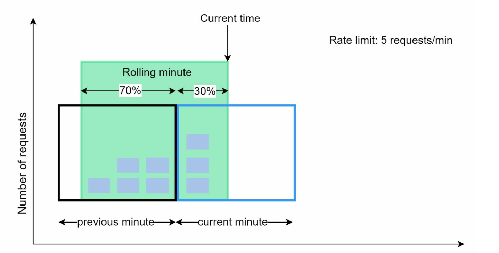
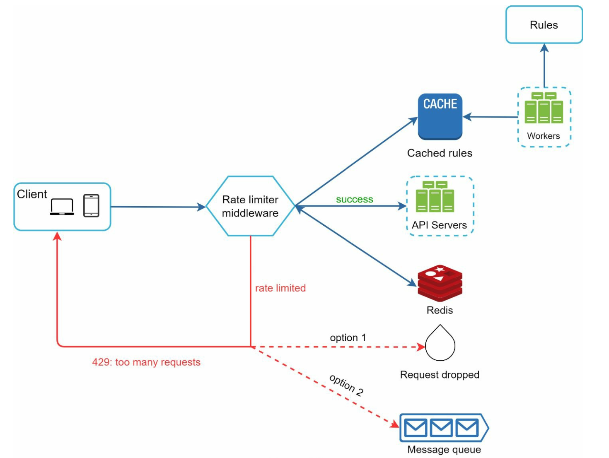

Design a Rate Limiter
Kitni requests allow karni hain, kahan check karna hai, aur distributed duniya mein counters ko sahi kaise rakhna hai — 5 algorithms aur Redis-based architecture.
Introduction
Network system mein rate limiter client ya service dwara bheje gaye traffic ki rate control karta hai. HTTP world mein: ek specified period mein kitni client requests allow hongi. Threshold cross → baaki calls block. Examples: ek user 2 posts/second se zyada nahi; ek IP se din mein max 10 accounts; same device se weekly 5 reward claims.
Fayde
- DoS se bachav: intentional ya unintentional excess calls resource starvation create karte hain. Bade tech companies ke public APIs lagbhag sab rate limited hote hain.
- Cost reduction: extra requests limit karo → kam servers; paid third-party APIs (credit check, payment) per-call charge karte hain — wahan to aur zaroori.
- Overload prevention: bots ya user misbehaviour ka excess traffic filter karo.
Step 1: Problem samjho aur scope tay karo
Notes ke hisaab se candidate–interviewer conversation se ye requirements nikli:
- Server-side API rate limiter (client-side nahi).
- Flexible — different throttle rules (IP, user ID, ya kisi bhi property pe).
- Large scale, distributed environment — multiple servers/processes ke beech shared.
- Separate service ho ya application code mein — design decision hamara.
- Throttled users ko inform karna hai.
Non-functional requirements
| Requirement | Kyun important |
|---|---|
| Accurate throttling | Galat block = angry users; galat allow = protection fail |
| Low latency | Har request ke path mein hai — HTTP response time slow nahi hona chahiye |
| Low memory | Millions users × counters |
| Distributed | Multiple API servers ek hi limit share karein |
| Exception handling | Clear 429 + headers |
| High fault tolerance | Rate limiter (e.g. cache server) down ho to poora system down nahi hona chahiye |
Step 2: High-level design — rate limiter kahan rakhein?

- Client-side: unreliable — client requests easily forge ho sakti hain, aur client implementation pe hamara control nahi.
- Server-side: API server ke andar code — full control.
- Middleware / API gateway: API servers ke aage ek layer jo throttle kare. Microservices mein ye aksar API gateway mein hota hai — gateway fully-managed service hai jo rate limiting, SSL termination, authentication, IP whitelisting, static content serving support karta hai.
HTTP 429 Too Many Requests status code indicate karta hai ki user ne bahut requests bhej di.
Placement guidelines
- Current tech stack evaluate karo (language, cache service) — server-side efficient implement ho sakta hai?
- Business needs ke hisaab se algorithm choose karo. Server-side mein full control; third-party gateway mein choices limited.
- Already microservices + API gateway (auth, IP whitelist ke liye) hai → rate limiter bhi wahin daalo.
- Apna rate limiter banana time leta hai. Engineering resources kam hain → commercial API gateway better option.
RequestRateLimiter filter Redis-backed token bucket use karta hai (replenishRate, burstCapacity). Java app ke andar Resilience4j RateLimiter ya Bucket4j token-bucket library common hain. Nginx mein limit_req module leaky-bucket style kaam karta hai.Step 3: Rate limiting algorithms
Paanch popular algorithms — har ek ke alag pros/cons. Interview mein in sab ki ek line + ek trade-off aana chahiye.
1. Token Bucket

- Bucket ki pre-defined capacity hai. Refiller periodic rate pe tokens daalta hai; full bucket mein extra tokens gir jaate hain.
- Har request ek token consume karti hai. Token nahi → drop.
- Do parameters: bucket size (max tokens) aur refill rate (tokens/second).
- Kitne buckets? Rules pe depend: per user per API endpoint alag bucket (1 post/sec, 150 friends/day, 5 likes/sec → har user ke 3 buckets); IP-based ke liye per IP; global 10,000 req/sec ke liye ek shared bucket.
Pros: implement karna easy, memory efficient, short bursts allow karta hai (jab tak tokens bache hain). Cons: do parameters tune karna tricky.
// Pseudo-code (lazy refill — timer ki zaroorat nahi)
long tokens; long lastRefillNanos;
synchronized boolean tryAcquire() {
long now = System.nanoTime();
long add = (now - lastRefillNanos) * refillPerSec / 1_000_000_000L;
if (add > 0) { tokens = Math.min(capacity, tokens + add); lastRefillNanos = now; }
if (tokens > 0) { tokens--; return true; }
return false;
}2. Leaking Bucket

- Token bucket jaisa, lekin requests fixed rate pe process hoti hain. Usually FIFO queue se implement.
- Parameters: bucket (queue) size aur outflow rate.
- Pros: limited queue size → memory efficient; stable outflow — jab downstream ko steady rate chahiye.
- Cons: burst aane pe queue purani requests se bhar jaati hai; agar wo time pe process na hon to recent requests rate limited ho jaati hain. Tuning bhi tricky.
Example implementation (notes se): github.com/uber-go/ratelimit — Uber ka Go library, leaky-bucket style limiter jo calls ko evenly space karta hai. Isko kaise padhna hai, URL guide mein detail hai.
limit_req bhi isi model pe hai.3. Fixed Window Counter

- Timeline ko fixed-size windows mein baanto, har window ka counter.
- Har request counter +1. Threshold pahuncha → naye window tak requests drop.
Major problem: window edges pe burst.

Pros: memory efficient, samajhna easy, window end pe quota reset kuch use cases fit karta hai (e.g. "har ghante 100 requests"). Cons: edge pe spike allowed quota se zyada requests nikaal deta hai.
# Redis mein fixed window (simple)
key = "rl:{user}:{epoch_minute}"
count = INCR key
if count == 1: EXPIRE key 60
if count > LIMIT: reject 4294. Sliding Window Log

- Har request ka timestamp rakho (Redis sorted set mein typically).
- Nayi request aaye → current window ki shuruat se purane timestamps hatao → naya timestamp add → log size ≤ limit ho to accept, warna reject.
- Pros: bahut accurate — kisi bhi rolling window mein limit exceed nahi.
- Cons: bahut memory — rejected requests ke timestamps bhi store hote hain.
ZREMRANGEBYSCORE rl:u1 0 (now-60000)
ZADD rl:u1 now now
ZCARD rl:u1 -- > LIMIT ? reject
EXPIRE rl:u1 605. Sliding Window Counter

Formula: requests in rolling window = current_window_count + previous_window_count × overlap%.
- Pros: traffic spikes smooth (previous window ka average use hota hai); memory efficient (sirf 2 counters).
- Cons: approximation hai — previous window mein requests evenly distributed maan leta hai. Lekin Cloudflare ke experiments ke mutabik 400 million requests mein sirf 0.003% galat allow/limit hui (book ka reference) — practically kaafi achha.
| Algorithm | Memory | Bursts | Accuracy | Best for |
|---|---|---|---|---|
| Token bucket | Low (2 values) | Allowed (up to bucket size) | Good | Public APIs, general purpose |
| Leaking bucket | Low (bounded queue) | Smoothed out | Good | Stable outflow chahiye (downstream protect) |
| Fixed window | Very low | Edge pe 2x leak | Weak at edges | Simple quotas ("per hour") |
| Sliding log | High (har timestamp) | Strict | Exact | Low-volume, strict limits |
| Sliding counter | Low (2 counters) | Smoothed | Approx (very close) | High-scale, near-accurate |
High-level architecture
Basic idea simple hai: ek counter rakho ki same user/IP se kitni requests aayi; limit cross → reject. Counter kahan? DB slow hai (disk). In-memory cache (Redis) fast hai aur time-based expiry support karta hai. Redis ke do commands: INCR (counter atomically +1) aur EXPIRE (timeout ke baad auto-delete).

Rules
Rules generally config files mein disk pe hote hain. Lyft ka open-source rate limiter YAML rules use karta hai, jaise:
domain: messaging
descriptors:
- key: message_type
value: marketing
rate_limit:
unit: day
requests_per_unit: 5Rate limit exceed hone pe
- HTTP 429 return. Use case ke hisaab se rate-limited requests ko queue mein rakh ke baad mein process kar sakte ho (e.g. orders jo overload ki wajah se reject hue).
- Headers se client ko batao:
X-Ratelimit-Remaining: current window mein baaki allowed requests X-Ratelimit-Limit: per window kitni calls allowed X-Ratelimit-Retry-After: kitne seconds baad retry karo taaki throttle na ho
Flow
- Client request rate limiter middleware ko bhejta hai.
- Middleware cache se rules load karta hai; Redis se counters aur last request timestamp fetch karta hai.
- Response ke hisaab se: limit nahi hui → API servers; hui → 429, request drop ya queue.
Distributed environment mein challenges
1. Race condition
Do requests concurrently counter padhti hain (dono ko 3 mila), dono +1 karke 4 likhti hain — sahi value 5 thi. Read-check-write atomic nahi hai.
- Locks obvious solution hain lekin system ko significantly slow karte hain.
- Better: Lua script (Redis mein atomically execute hoti hai) ya sorted sets data structure.
-- Redis Lua: atomic fixed-window check
local c = redis.call('INCR', KEYS[1])
if c == 1 then redis.call('EXPIRE', KEYS[1], ARGV[1]) end
if c > tonumber(ARGV[2]) then return 0 end
return 12. Synchronization
Millions users ke liye ek rate limiter server kaafi nahi. Multiple rate limiter servers hon aur client ki requests alag servers pe jaayein (stateless web tier) to har server ka local counter galat hoga. Sticky sessions ek option hai lekin scalable/flexible nahi. Better: centralized data store (Redis) jo saare rate limiter instances share karein.
Performance optimization aur monitoring
- Multi-data center setup: door ke users ke liye latency high hoti hai. Cloud/edge providers duniya bhar mein edge servers rakhte hain; traffic nearest edge server pe route hota hai.
- Eventual consistency se data sync karo — har request pe globally strong sync mehenga hai; thoda over-allow acceptable trade-off hai.
- Monitoring: analytics se check karo ki (a) algorithm effective hai, (b) rules effective hain. Rules bahut strict → valid requests drop → relax karo. Flash sale jaise bursts mein algorithm ineffective → token bucket jaisa burst-friendly algorithm.
Wrap-up: extra talking points
- Hard vs soft limit: hard — threshold kabhi exceed nahi; soft — thodi der ke liye exceed allowed.
- Different OSI layers: yahan application layer (HTTP, L7) pe limit kiya; network layer (L3) pe IP tables se IP-based limiting bhi possible.
- Client best practices: client cache use kare taaki API calls kam hon; limit samjhe aur short time mein zyada na bheje; exceptions/errors gracefully handle kare; retry mein enough back-off time (exponential backoff + jitter).
- Clarify: client vs server, kis key pe limit (user/IP/API key), distributed hai?, throttled user ko kya response.
- Placement bolo: "API gateway / middleware, kyunki microservices mein cross-cutting concern hai."
- 5 algorithms ka 1-line comparison, phir ek choose karo with reason: "Token bucket — bursts allow, 2 numbers per key, Redis mein cheap."
- Architecture draw: middleware + Redis + rules cache + 429 headers.
- Deep dive: race condition → Lua script; multiple limiter nodes → central Redis; Redis down → fail-open (allow) vs fail-closed — business decide kare.
Common follow-up questions
Redis down ho gaya to?
Fault tolerance requirement ke hisaab se: fail-open (requests allow karo, local in-memory fallback limiter ke saath) taaki poori API down na ho. Payment/OTP jaise abuse-sensitive endpoints ke liye fail-closed justify ho sakta hai. Redis ko replicate (Sentinel/Cluster) karo.
Har request pe Redis call — latency?
Same-DC round trip ~0.5ms (Chapter 02). Aur kam karna ho to local token bucket + periodic sync with central store (approximate, eventual consistency).
Token bucket vs sliding window counter kab?
Burst allow karna hai (user ne app khola, 10 calls ek saath) → token bucket. Smooth, near-exact per-minute limit chahiye → sliding window counter.
Rules kaise update honge bina deploy?
Rules config store (file/DB) mein; workers periodically cache refresh karte hain (diagram ka Rules → Workers → Cache path).
- Redis ke Top Use Cases — Cache, Queue, Lock, Throttle, Session, Rate Limit — Ek chhote app ki kahani mein Redis ke 6 kaam: cache-aside, Streams se queue, distributed lock, lock fail pe th
Key Takeaways
- Rate limiter server-side / API gateway pe; throttled request → HTTP 429 +
X-Ratelimit-*headers. - 5 algorithms: token bucket, leaking bucket, fixed window, sliding log, sliding counter — memory vs accuracy vs burst trade-off.
- Counters Redis mein (
INCR+EXPIRE); race conditions ke liye Lua scripts / sorted sets, locks nahi. - Multiple limiter nodes → centralized store; multi-DC → edge + eventual consistency.
- Monitoring se rules aur algorithm tune karo; clients ko backoff sikhao.